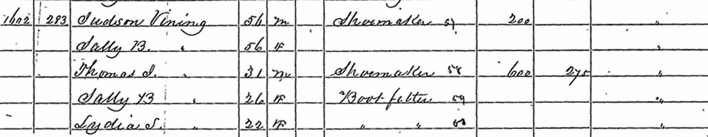
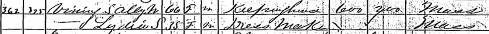
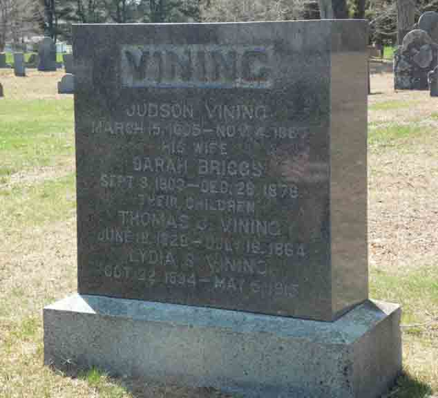

Census Data
| 1830 | 1840 | 1850 | 1860 | 1870 | 1880 | |
| Judson Vining | ? | ? | 47 | 56 | dead | |
| Sarah W. (Briggs) Vining | ? | ? | 47 | 56 | 66 | dead |
| Thomas J. Vining | ? | ? | 22 | 31 | dead | |
| Sally B. Vining | ? | 19 | 26 | [living? in separate household] | ||
| Lydia S. Vining | ? | 15 | 22 | 35 | ? |


Death Data
Headstone for Judson Vining, Sarah W. (Briggs) Vining, and two of their children, in Hanover Center Cemetery, Hanover, Plymouth County, Massachusetts (from Find A Grave):